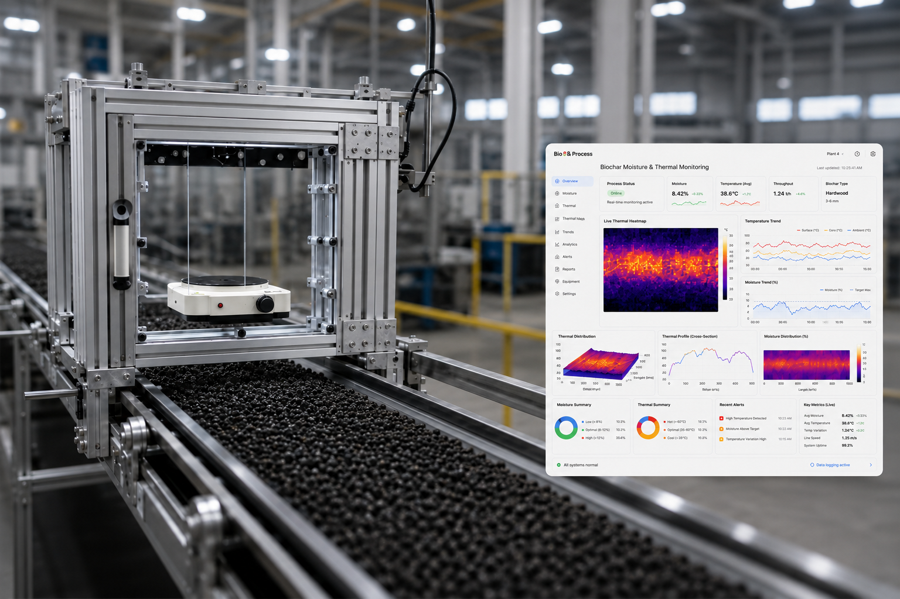
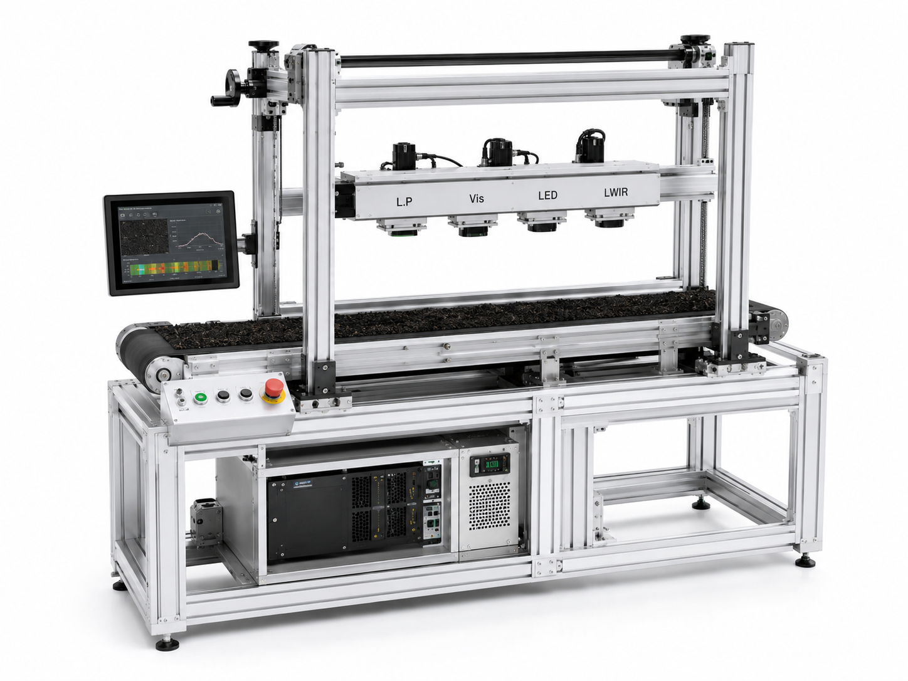
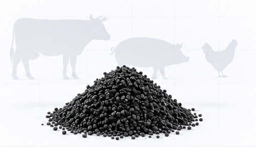
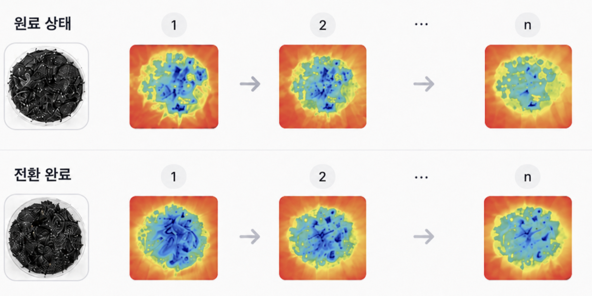
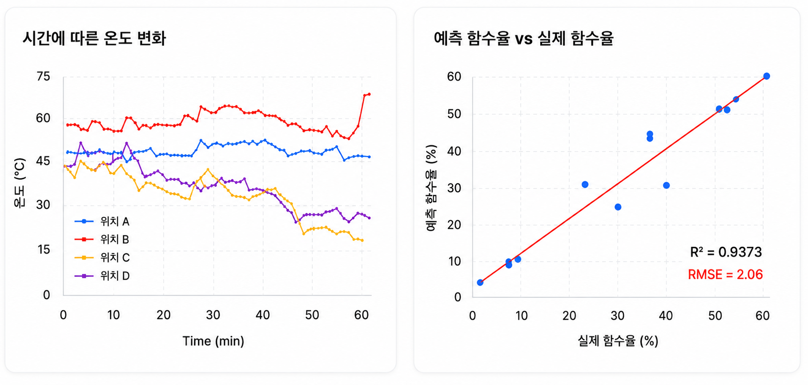

바이오차 등 바이오소재 생산 공정에서 원료의 함수율(수분 상태)을 비접촉 열화상 센서로 실시간 계측합니다. 이동 중인 컨베이어 위에서도 공정을 중단하지 않고 품질 변화를 추적할 수 있어, 고온·분진 등 열악한 환경의 양산 라인에서도 일관된 공정 관리가 가능합니다.


연속 이송 라인 기반 비접촉 실시간 함수율 계측 시스템
연속 이송 라인에서 비접촉 방식으로 축분 원료의 함수율을 실시간 정량 예측하는 AI 품질 분석 시스템입니다. 원료 표면의 증발 냉각 효과에 따른 시계열 데이터를 분석해, 점성이 강하고 수분 분포가 불균일한 환경에서도 높은 신뢰도를 확보했습니다. 저비용·고효율 계측 모듈의 레트로핏 방식으로 기존 설비 교체 없이 도입할 수 있습니다.
국내 축분 발생량은 연간 약 5천만 톤에 달합니다. 2016년 런던협약에 의해 해양 투기가 금지되면서, 전처리로 함수율을 70% 이하에서 20% 이하로 낮추는 것이 필수가 되었습니다.

비접촉 LWIR 열화상으로 전환 과정을 실시간 모니터링합니다.


바이오매스·펠릿·바이오차 제조/판매 업체. 공정 연동형 시제품 고도화 파트너(~’27), 기술이전 3건 진행
IoT 기반 자동 축분 계측·정화 사업. 충북지역펀드 IR 및 투자유치 연계(’26)